开心果 Need Car · 2023-09-02T07:25:00+08:00 · 微信原文
不知道大家有没有这样的感受：看别人的代码，感觉自己啥都会，当自己设计某个模块时，却只会写if...else...
所以，时常动手去写写代码，实践心中所想，远比口头来得实际。本文，回顾一下双链表，以及双链表的基本操作。为什么需要去复习双链表呢？因为在软件的架构设计中，链表随处可见，而优秀的软件架构中，双链表的使用更是无处不在，eg：内存处理、定时器处理，以及各种抽象数据处理等。
1、双链表
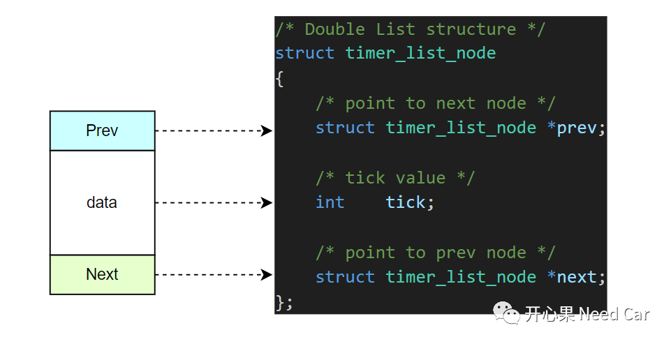
相比于单链表的单向查询，双链表可以轻松地进行双向查询，链表结构如下所示：
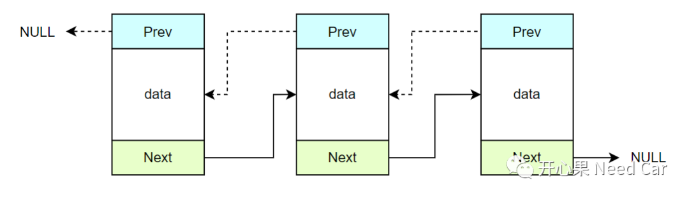
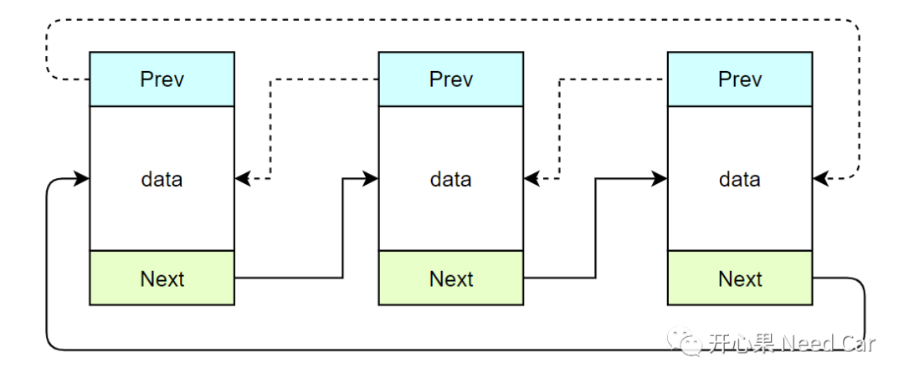
2、双链表的基本操作
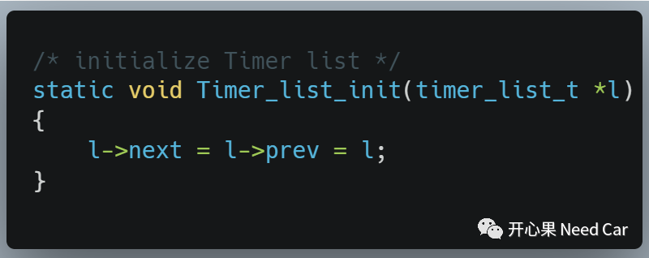
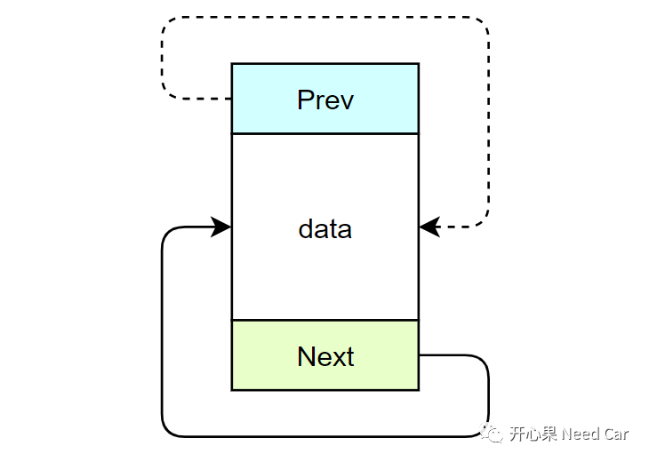
（二）向双链表的某个节点后端插入新节点
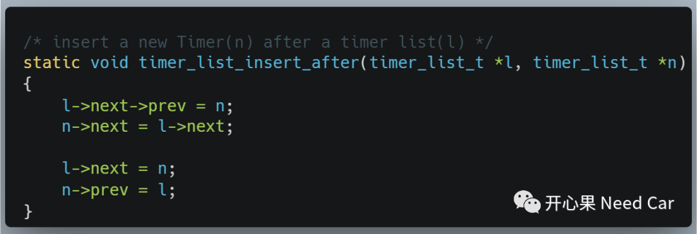
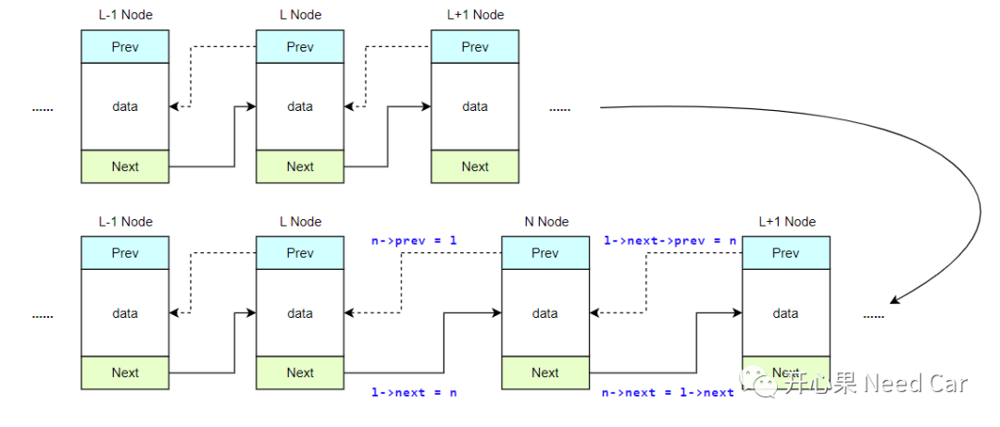
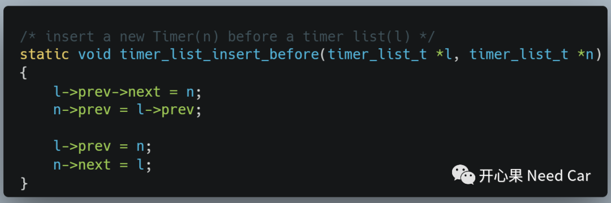
如上代码，图解如下所示：
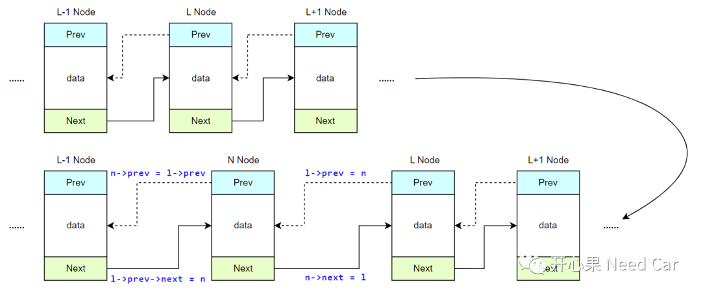
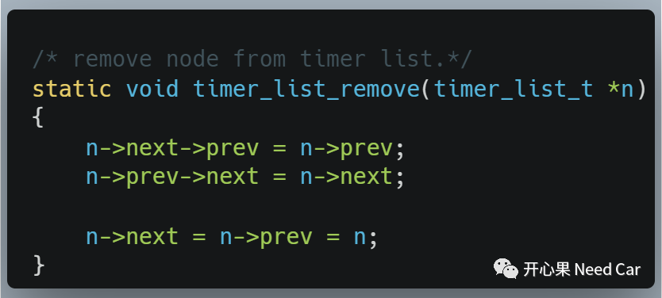
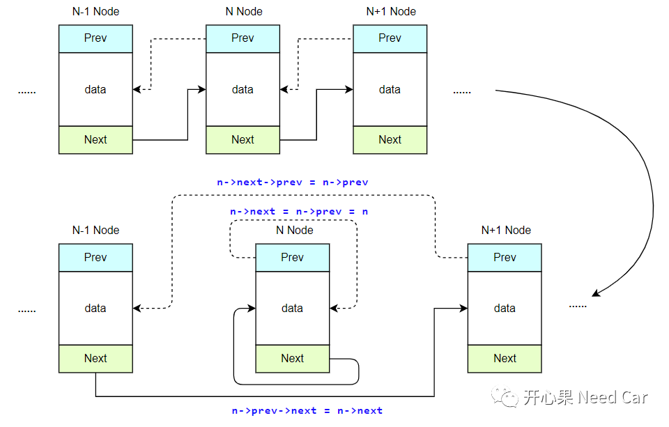
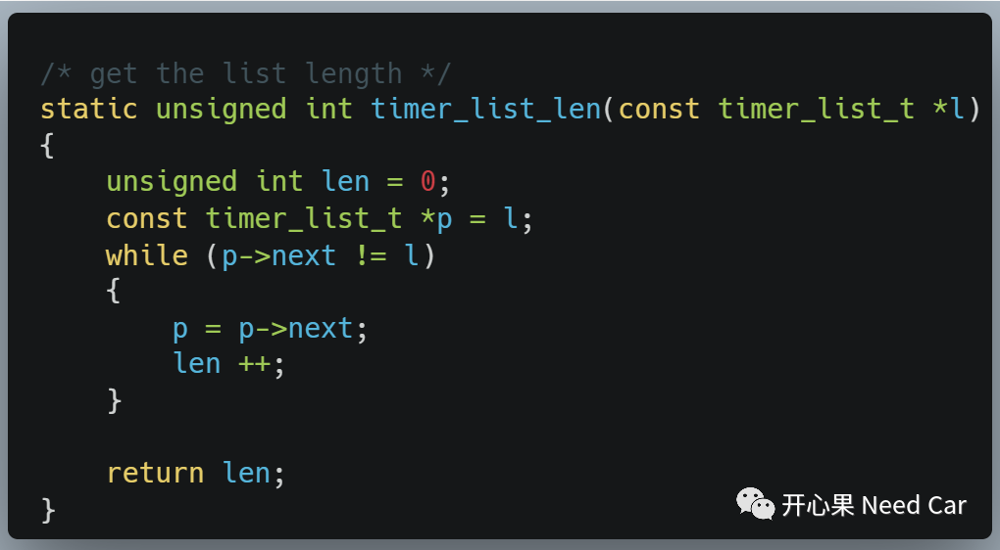
提示：函数形参是一个常量指针，即：指针指向的内容不能更改，指针指向的地址可以修改。注意与指针常量的区别，指针常量：指针指向的地址不能修改，指针指向地址的内容可以修改。
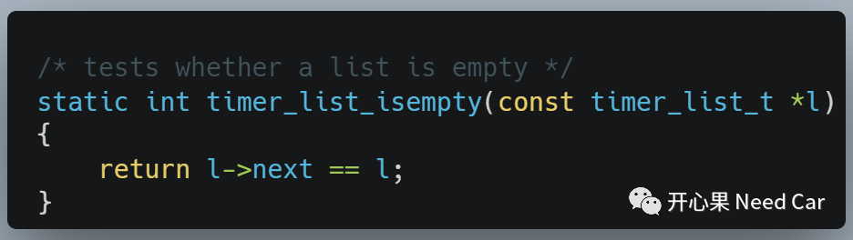
往期精彩回顾
如何基于HighTec将源文件（*.c）打包成静态库文件（*.a）